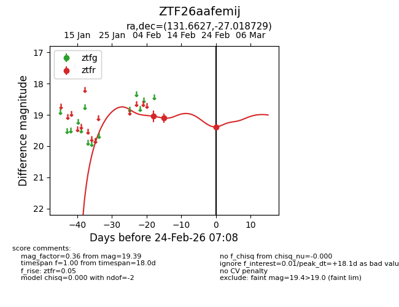
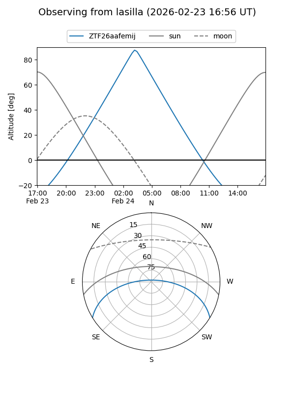
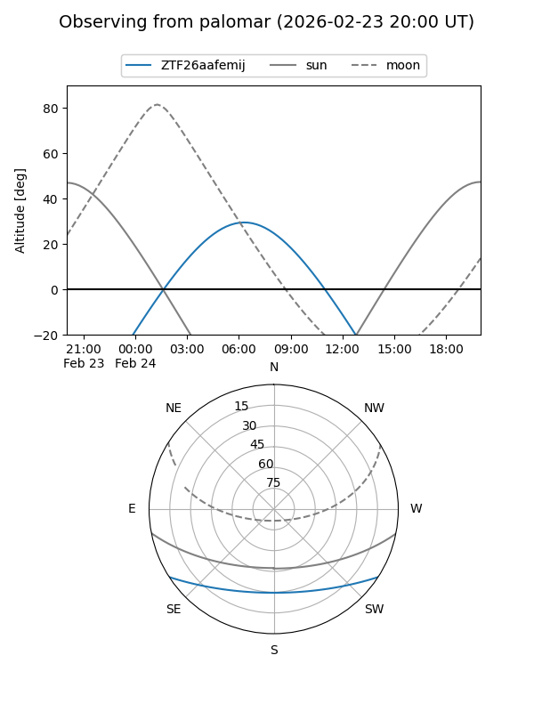

ZTF26aafemij
Target ZTF26aafemij at 2026-02-24 09:08
Aliases and brokers:
FINK: link
Lasair: link
ALeRCE: link
alt names
ZTF26aafemij (ztf,fink_ztf)
Coordinates:
equatorial (ra, dec) = 131.6627,-27.01873
equatorial (HMS+DMS) = 08:46:39.04,-27:01:07.42
galactic (l, b) = (250.4788,+10.07014)
Flags:
Photometry:
last ztfr=19.39
3 ztfr detections
Lightcurve

Visibility


Additional plots